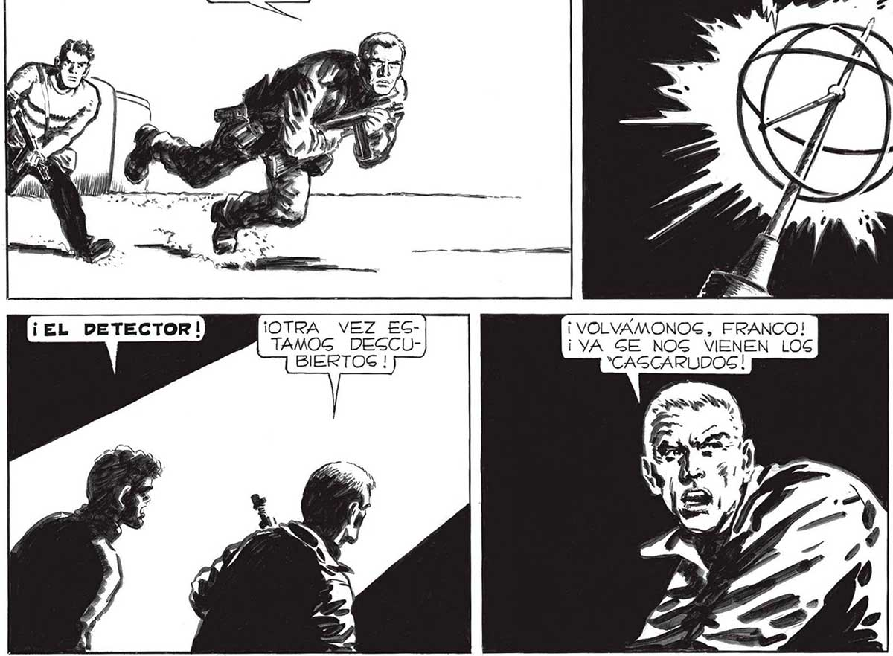

DICES BIEN, FRANCO... ¡VAMOS ! ¡OTRA VEZ £ECTAMOS DESCUBIERTOS ! DEBEMOS ARRIESGARNOS, SENOR... O NOS _QUEDAREMOS AQUI LA NOCHE ENTERA. A y $ 10 e FARECIA O, == ? MD, ESTAR SIN >= pa NNVW//==== Mr = VIGILANCIA ... q] pa Se ID DE AQUI NOM NO.. NOS CORRE | | ESPEREMOS A SE VE NADA BB REMOS HASTA QUE NINGUN TODAVIA. AQUEL OTRO "CASCARUDO“MILADO. RE PARA ESTE Z ¡ VOLVAMONOS, FRANCO! ¡YA GE NOG VIENEN LOS 'CASCARUDOS |! ¡NO, SEÑOR! YO NO ME VUELVO... ¡ME MATARAN, PERO VOY A EN BOCAR UNA GRANADA DENTRO DEL PABELLON DE LA ORQUESTA! WIN =Y === d YY 2 » MUA E e. e pre... Ps o ...a 151
